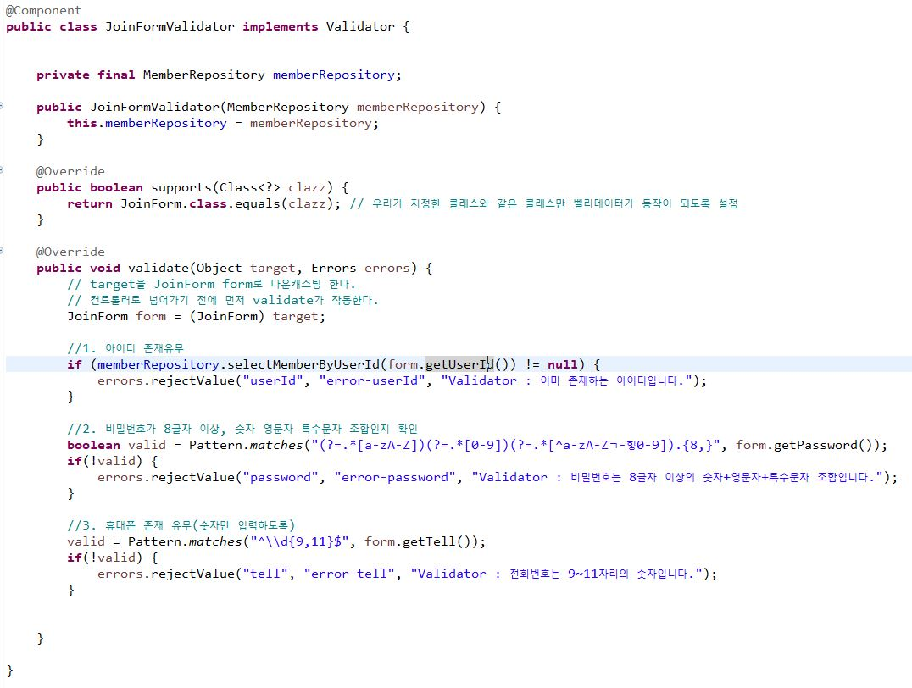
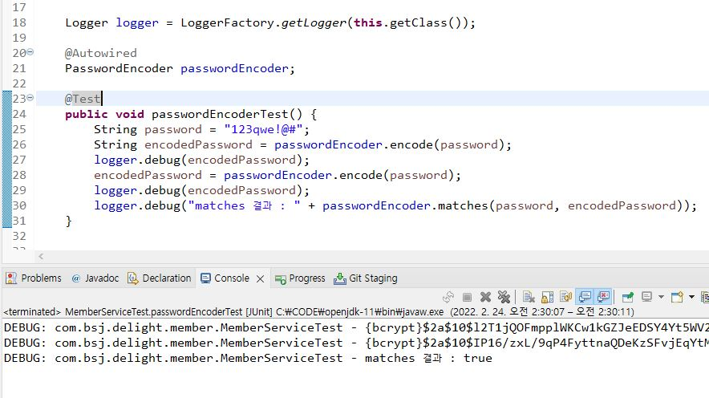
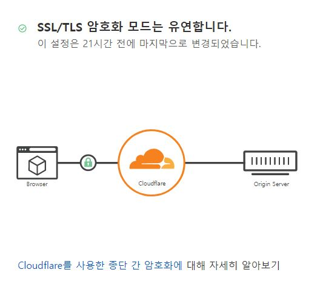

배석진
Bae Seok Jin
( Web Back-End Developer )
Bae Seok Jin
( Web Back-End Developer )
◾ 프로젝트 배포를 공부하며 만든 이미지와 컨테이너
https://hub.docker.com/u/happyshipb
| 프로젝트 상세설명 | |
|---|---|
| 프로젝트 소개 |
지인이 자신의 헤어샵의 사이트를 갖고 싶다는 부탁으로 학원 수료 후 가볍게 제작하게 된 사이트입니다. 기본적인 게시글과 댓글의 CRUD와 API 삽입의 공부 삼아 제작하게 되었지만 프로젝트에 애정이 생겨서 Interceptor와 정규표현식을 사용하여 치환에 힘을 주게 되었습니다. 또한 실제로 docker를 이용하여 클라우드 서버를 연결하여 배포도 성공적으로 완료하게 되어 마음이 가는 첫 개인 프로젝트입니다. |
| 도메인 |
https://www.delighss.shop/ [테스트계정] ID : DEV / PW : tjrwls123!@#
|
| 시연 촬영 영상 | https://youtu.be/S-feoKs5or4 |
| 주요기능 |
◽ 게시글 댓글 CRUD 및 페이징과 검색 ◽ 로그인 로그아웃 ◽ 카카오지도 ◽ 마이페이지 |
| 개발환경 |
◽ OS : Windows 10 ◽ Tool : Spring Tool Suite - Eclipse ◽ DB : Oracle ◽ Server : Apache Tomcat 8.5 ◽ Language : JAVA / ANSI SQL / JAVASCRIPT / JSP ◽ Distribute : docker image / Oracle Cloud |
| 사용툴 |
◽ Github : https://github.com/BaeSeokJin/delight ◽ ERD Cloud(BD설계) |
| 구현기능 |
1. Join Validator

DB에서 UNIQUE 제약조건을 걸지 않고 Controller단에서 새로 클래스를 생성하여 회원가입 제약조건을 만들었습니다.
DB에서 제약조건을 걸 경우 모든 클래스가 영향을 받으므로 추가적인 서비스를 구현하였을 때 제약조건으로 인해 다른 오류가 발생하는 것을 방지할 수 있으며 추후 오류 찾기도 번거롭기 때문입니다. 또한 validator의 Controller와 DTO는 원하는 조건으로 구현이 가능하므로 다른 서비스에 영향이 받지 않는 유연성을 확보할 수 있어서 이렇게 구현하게 되었습니다.
2. Password Encoding

DelegatingPasswordEncoder를 사용하여 페스워드 인코딩을 구현하였습니다. 사진과 같이 같은 페스워드라도 다르게 인코딩이 되며 또한 복호화(Decoding)가 불가능하므로 비밀번호 유출로인한 2차 피해를 확실하게 방지할 수 있게 되었습니다.
3. Cloudflare

배포를 하면서 클라우드 서버에서 http 연결을 위해 80 port의 방화벽만 열어 연결하였으나 https의 https의 443 port를 연결시켜 주기 위해 중간에 Cloudflare를 설정하여 443port를 80port로 치환시켜주어 port 추가 설정을 하지 않도록 만들었습니다.
|
| 문제해결 및 소감 |
◽ Spring MVC의 LifeCycle에 대한 이해도가 낮은 상태로 프로젝트를 시작하였으나 프로젝트를 마친 시점에서는 이해도가 조금 올라간 것 같아서 기뻤습니다. 추가적으로 AOP와 거기에 사용되는 디자인 패턴이 MVC 설계 로직에 어떠한 영향을 미치는지에 대한 기술 부채를 느꼈습니다. ◽ 프로젝트를 배포하는 과정에서 CentOS 8 update가 안되어 찾아보니 2021년 12월 31일부터 설정파일 환경이 바뀌어 리눅스의 root에서 파일 변경하는 과정에 시간을 많이 소비하였습니다. 적어도 리눅스의 기초가 잡혀있었다면 간단히 해결될 문제여서 리눅스를 포함한 CS 지식의 필요성을 느끼며 자극을 받는 계기가 되었습니다. ◽ 자바스크립트로 유효성 검사를 만들면서 코드의 흐름을 이해할 수는 있으나 스스로 로직 설계는 시간이 걸린다는 것을 느끼고 자바스크립트에 대한 기초가 많이 부족하다는 것을 느꼈습니다. 타입추론과 유효 범위(scope)에 대해 더욱 공부할 계획입니다. |
| 프로젝트 상세설명 | |
|---|---|
| 프로젝트 소개 | 거리두기 사회가 길어짐에 따라 택배 수요에 맞춰 무인보관함 키오스크를 저렴하게 만들어 보고 싶다는 생각에 시작하게 된 5인 프로젝트입니다. |
| 주요기능 |
◽ 보관함 빌리기 빌려주기 기능 ◽ 보관함 사용 리뷰 ◽ 로그인 및 CURD ◽ 신고 기능 |
| 담당 역할 |
◽ 신고 기능 : 회원 신고 게시판 CRUD와 검색, 페이징, 회원 권한 회수 기능 |
| 개발환경 |
◽ OS : Windows 10 ◽ Tool : Spring Tool Suite - Eclipse ◽ DB : Oracle ◽ Server : Apache Tomcat 8.5 ◽ Language : JAVA / ANSI SQL / JAVASCRIPT / JSP |
| 사용툴 |
◽ Github : https://github.com/soeunnnn/finalProject ◽ Oven(초기UI설계) / ERD Cloud(BD설계) / Trello(협업 일정 관리) |
| 문제해결 및 소감 |
◽ 팀 프로젝트를 진행하면서 크게 2가지를 배웠습니다. 우선 초기 설계의 중요성입니다. 요구사항 분석 및 UI 설계를 꼼꼼하게 해놓을수록 로직 설계 또한 쉬워집니다. ◽ 그리고 팀원 간의 의사소통의 중요성입니다. git으로 협업을 하고 있지만 의사소통이 없다면 예상치 못한 merge가 발생되어 불필요한 시간이 소비되어 버립니다. 이러한 경험을 바탕으로 다음 프로젝트에서는 리더로서 설계와 커뮤니케이션을 이끌고 싶습니다. |
| 프로젝트 상세설명 | |
|---|---|
| 프로젝트 소개 | 템플릿을 받아와 커스텀한 다음 Gighub Page로 만든 포트폴리오 사이트입니다. |
| 개발환경 |
◽ OS : Windows 10 ◽ Tool : Visual Studio Code / Gighub Desktop ◽ Server : Gighub Page ◽ Language : HTML5 / CSS3 / JAVASCRIPT |
| 문제해결 및 소감 |
◽ static 사이트이므로 서버단 처리는 하지 않았으나 html과 css를 조금 더 자세히 공부할 수 있었던 계기가 된 것 같습니다. 특히 사이트 제작을 통해 css의 선택자(Selector)의 우선순위에 대한 이해도가 높아진 것 같습니다. ◽ Github에서도 Gighub Page를 이용하여 사이트를 제작하는 방법을 배웠고 GitHub Desktop이라는 새로운 tool도 알게되었습니다. |
2021.05 ~ 2021.12
● JAVA / JDBC&Servlet / JSP / Spring Framework / Mybatis / Ajax
● ORACLE
● HTML / CSS / JavaScript
2013.03 ~ 2020.08
● 2018년 일본학과 학회장
● 2019~20년 일본 메지로대학(目白大学) 유학